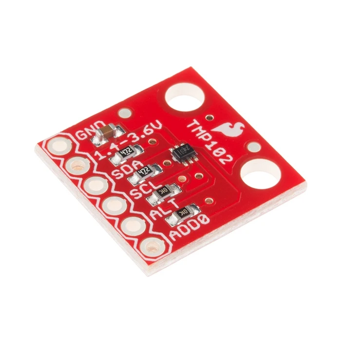
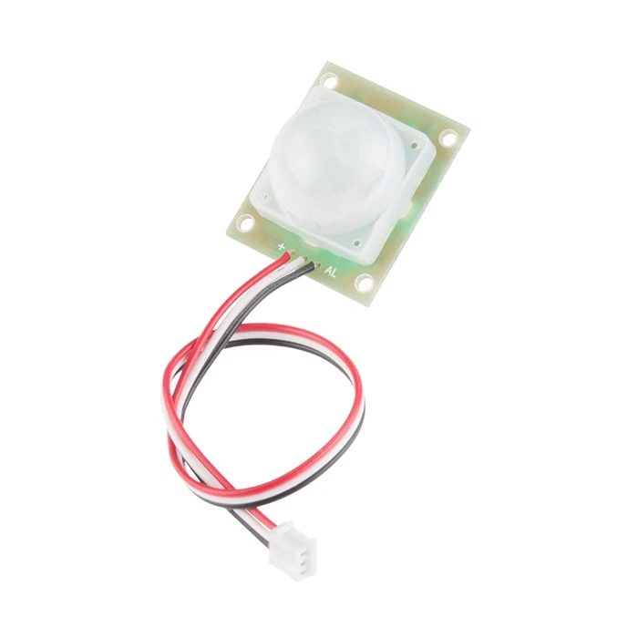
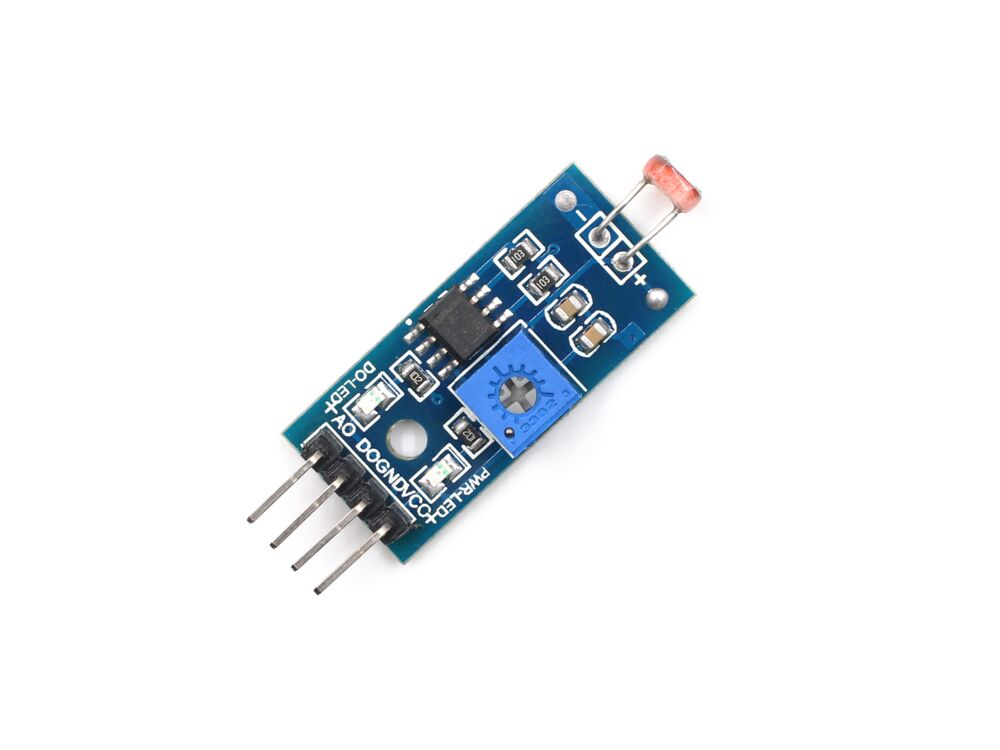
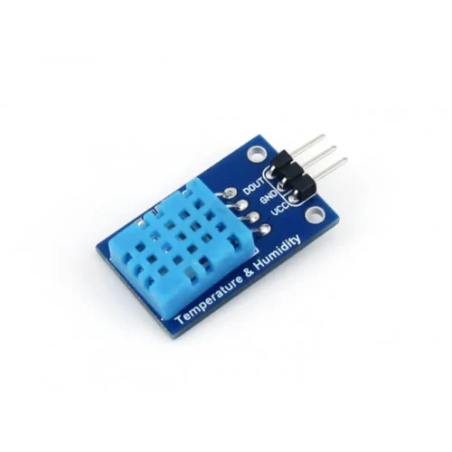
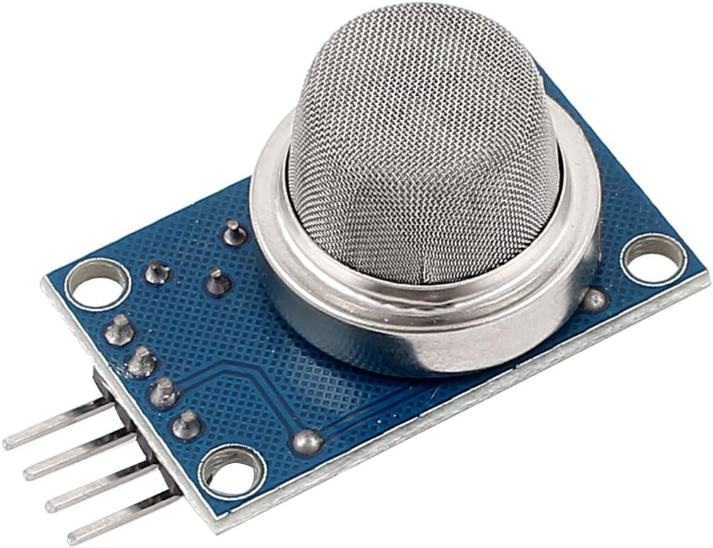
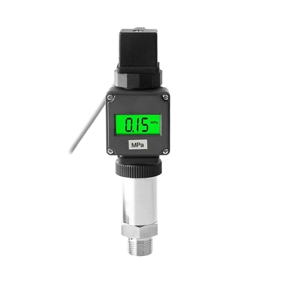

Vrste senzora i njihova primena
Temperaturni senzori
Koriste se za merenje temperature u okruženju, uređajima, laboratorijama i pametnim kućama. Primeri uključuju DS18B20, LM35 i TMP36 senzore.
 Pogledaj senzorSenzori pokreta
Detektuju kretanje ljudi ili objekata. Koriste se u sigurnosnim sistemima, automatskom osvetljenju i pametnim kućama. PIR senzori su najčešći.
 Pogledaj senzorSenzori svetlosti
Reaguju na nivo osvetljenja i koriste se u automatskom zatamnjivanju ekrana, pametnom osvetljenju i robotici. LDR (Light Dependent Resistor) je najpoznatiji.
 Pogledaj senzorSenzori vlažnosti
Mere relativnu vlažnost vazduha i koriste se u meteorologiji, HVAC sistemima i pametnim baštama. DHT11 i DHT22 su najčešći senzori.
 Pogledaj senzorSenzori za gas
Detektuju prisustvo gasova poput metana, propana, ugljen-dioksida i dima. Koriste se u industriji, bezbednosti i pametnim alarmima. MQ serija je najpoznatija.
 Pogledaj senzorSenzori pritiska
Mere pritisak gasa ili tečnosti. Koriste se u automobilima, industriji, medicinskim uređajima i meteorologiji. Postoje analogni i digitalni senzori.
 Pogledaj senzor